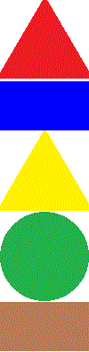

Walidacja strony HTML to proces sprawdzania, czy kod HTML strony jest zgodny ze standardami i specyfikacjami wyznaczonymi przez organizacje, takie jak W3C (World Wide Web Consortium).
Walidator to narzędzie lub mechanizm służący do sprawdzania poprawności danych według określonych reguł. W zależności od kontekstu, może sprawdzać, czy dane są zgodne z wymaganym formatem czy spełniają konkretne kryteria lub czy sązgodne z obowiązującymi standardami.
| lewe menu | obszar główny | prawe menu  |
|
|
||